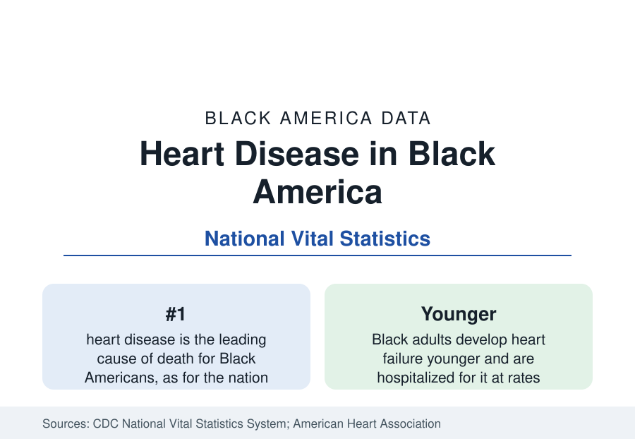

Black Public Health
Heart Disease Among Black Adults: The Leading Cause of Death
Heart disease kills Black adults at rates well above the national figure, and at younger ages. The CDC data on mortality, heart failure, and risk factors.

Heart disease is the leading cause of death for Black Americans, as it is for the nation — but the Black mortality rate from heart disease runs well above the national figure, roughly a quarter higher in the age-adjusted vital statistics, and the deaths come younger. Cardiovascular disease in its full accounting — heart disease and stroke together — claims more Black lives than the next several causes combined and is the single largest contributor to the life-expectancy gap documented in this section. This article reports the mortality data and the risk-factor structure beneath it.
The Mortality Data
The National Vital Statistics System records heart disease deaths by underlying cause on death certificates, age-adjusted for comparison across populations. The Black excess in those tables is broad-based: it appears in coronary heart disease, the largest component; in hypertensive heart disease, where the Black rate is a multiple of the national figure; and in heart failure, where Black adults are hospitalized at rates well above other groups and at markedly younger ages — heart failure in the forties and fifties, ages at which it remains uncommon nationally, is a recognized pattern in the clinical data. The age pattern is the mortality data's sharpest feature: because Black cardiovascular deaths concentrate in middle age rather than old age, each death removes more years of life, which is why heart disease dominates the life-expectancy decomposition in this section.
The Risk-Factor Stack
The clinical literature reads Black cardiovascular mortality as the output of a risk-factor stack whose components each appear in this section's data. Hypertension — 55 percent of Black adults, earlier and more severe — is the foundation. Diabetes, at nearly one in five adults, multiplies cardiac risk on top of it. Obesity affects roughly half of Black adults in the examination surveys, with the highest rates among Black women of any group in the national data. Smoking has fallen to near national rates after decades above them. Cholesterol treatment and control lag the diagnosis rates. The stack's arithmetic is multiplicative rather than additive: the typical Black cardiac patient in the clinical data carries two or three major risk factors simultaneously, which is why single-factor interventions disappoint and why the prevention literature emphasizes the cluster.
Treatment and Its Gaps
Once disease develops, the care data show the familiar gradient of this reference. Black patients receive cardiac procedures — catheterization, bypass surgery, defibrillator implantation — at rates below White patients with comparable presentations in study after study of the hospital data, and present to care later in their disease course. Cardiac rehabilitation, among the most effective post-event interventions in the literature, is referred and completed at lower rates. Against those findings stand the places where the data improve: hypertension control programs built on pharmacy and community-health-worker models have posted control rates in Black populations matching or exceeding national figures in trial settings, and the secular decline in cardiovascular mortality — the force that has driven American longevity for fifty years — has operated in the Black population too, from a higher base.
The Trend
The long trend is the same two-part story as cancer's. Black heart disease mortality has fallen dramatically from its twentieth-century levels — by more than half across the era of modern cardiology — and the Black-white mortality ratio has narrowed from its widest. But the decline has stalled periodically, most recently in the years when hypertension control nationally plateaued and obesity rose, and the absolute gap remains the largest of any cause of death. Public health targets treat the plateau as the problem to solve: the risk factors are measured, the interventions exist in demonstrated form, and the gap between demonstrated and delivered care is where the remaining mortality sits.
Reading the Heart Data
Summarized: the leading killer, at roughly a quarter above the national rate, arriving a decade younger, built from the section's measured stack of hypertension, diabetes, and obesity, and narrowed over the long run by the same medical progress that lifted the nation. Heart disease is where the life-expectancy gap is principally manufactured, and its data — risk factors first, treatment second, mortality last — are the organizing sequence of Black public health.
More in Black Public Health
Hypertension Among Black Adults: Prevalence, Control, and Consequences
About 55 percent of Black adults have hypertension — the highest rate of any U.S. group. Prevalence, onset, control, and the stroke, heart, and kidney consequences in the data.
Diabetes Among Black Adults: Prevalence and Complications
Nearly one in five Black adults has diabetes, diagnosed or undiagnosed — and its complications fall with particular weight. The CDC data on prevalence, control, and outcomes.
Black Life Expectancy: The Gap at Birth and Its Causes
Black life expectancy at birth is about 73 years, roughly five years below the national figure — the summary measure of every health gap in this section. The CDC data.
Source: CDC, National Center for Health Statistics, National Vital Statistics System; American Heart Association Heart Disease and Stroke Statistics.